Обучение HTML/CSS/JS
-
- Подключить на сайт script:
- Для оболочки карты в CSS указать ширину и высоту.
- Найти нужные координаты
-
В JS передать 2 параметра: center и zoom.
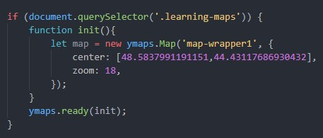
-
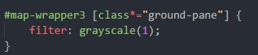
-
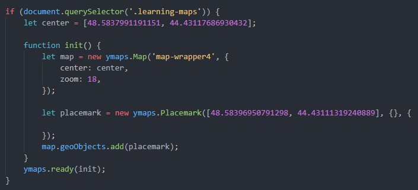
-
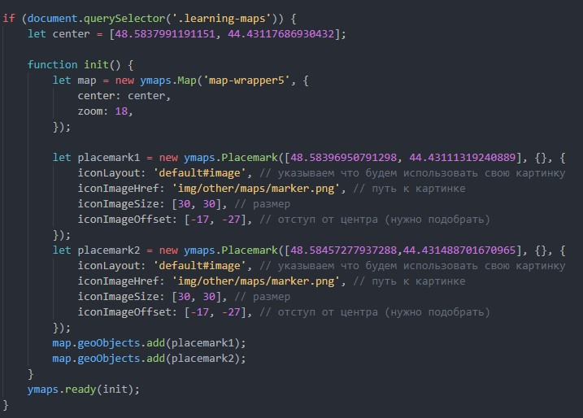
-
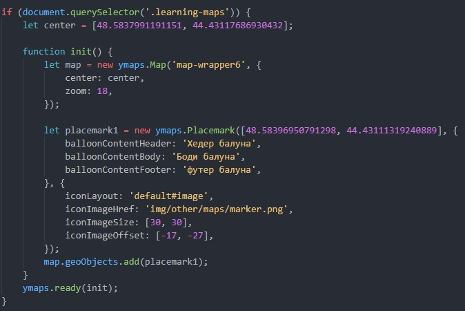
-
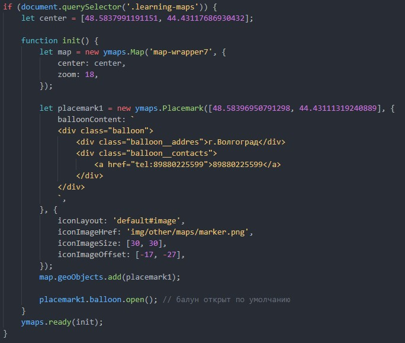
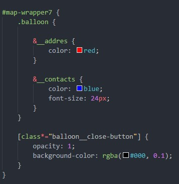
-
- Использовать шрифт woff2.
- Шрифты подключать локально.
- Большие картинки уменьшать в размере.
- Сжатие CSS, JS.
-
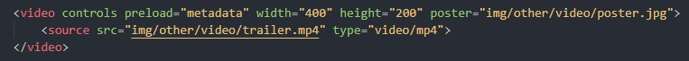
-
preload
Используется для загрузки видео вместе с загрузкой веб-страницы.
Этот атрибут игнорируется, если установлен autoplay.
auto - Загрузить видео целиком при загрузке страницы.
metadata - Загрузить только служебную информацию (размеры видео, первый кадр, продолжительность и др.).
none - Не загружать видео. - type тип (обязательно)
- controls Добавляет панель управления к видеоролику.
- poster Указывает адрес картинки, которая будет отображаться, пока видео не доступно или не воспроизводится.
- autoplay Видео начинает воспроизводиться автоматически после загрузки страницы. При этом видео нужно замутить (muted)
- loop Повторяет воспроизведение видео с начала после его завершения.
-
preload
Используется для загрузки видео вместе с загрузкой веб-страницы.
Этот атрибут игнорируется, если установлен autoplay.
-
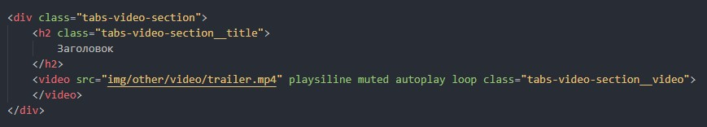
Запомнить! На iphone могут быть проблемы, что-бы их исправить нужно указать атрибут playsiline.
Заголовок
-
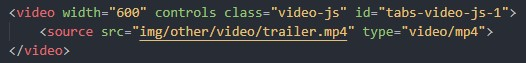
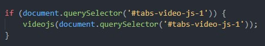
Так-же для доступности необходими подключить русский язык, по стандарту английский.
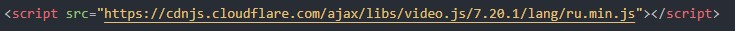
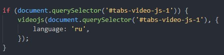
-
Для этого нужно на сайте video.js в разделе "темы" найти ссылку на github и подключить стили.
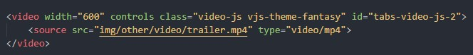
-
Стили можно менять, важно менять тот-же селектор и сохранять спецефичность
-
Для этого нужна библиотека videojs-youtube
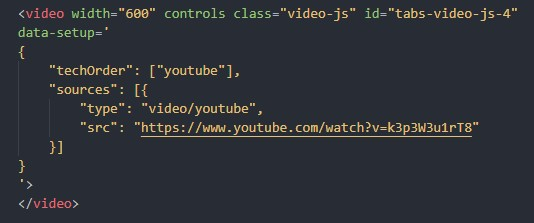
-